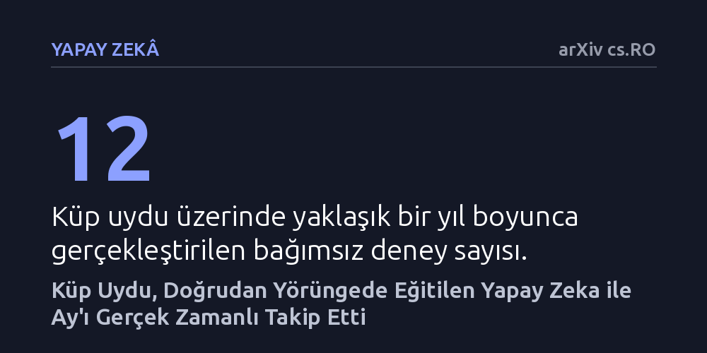

YAPAY-ZEKA · arXiv cs.RO · 2026-10-16
Araştırmacılar, derin uzay görevlerinde yer istasyonuna bağımlılığı azaltmak amacıyla yapay zeka modellerinin doğrudan yörüngedeki bir uyduda eğitilip çalıştırılamayacağını inceledi. Alçak Dünya yörüngesindeki bir küp uyduda yapılan deneyler, ticari bir işlemciyle modelin uzayda eğitilebildiğini ve Ay'ı otonom izleyebildiğini gösterdi.
Uzay araçlarının Dünya'dan komut veya yazılım güncellemesi beklemeden, yörüngede kendi kendine öğrenip anlık kararlar alabilen otonom sistemlere dönüşebileceğini gösteriyor.

Derin uzay görevlerinde uzay aracı ile Dünya arasındaki mesafe arttıkça iletişimdeki zaman gecikmeleri dakikaları, hatta saatleri bulabiliyor. Üstelik iletişim bant genişliğinin son derece kısıtlı olması, aracın kaydettiği yüksek çözünürlüklü görüntüleri Dünya'ya aktarıp orada işleme ve ardından geri komut bekleme yöntemini kullanışsız hale getiriyor. Bu durum, uzay araçlarının çevrelerini anında algılayıp kendi kararlarını yer istasyonuna bağımlı kalmadan verebilmesini zorunlu kılıyor.
Günümüz derin öğrenme ve yapay zeka modelleri görsel algılama görevlerinde yüksek başarı gösterse de, genellikle devasa sunuculara ve yüksek enerjiye ihtiyaç duyuyor. Enerjisi, boyutu ve hesaplama kapasitesi son derece sınırlı olan küçük bir uydunun içinde bu algoritmaları doğrudan eğitip çalıştırmak, uzay araştırmalarında uzun süredir aşılmaya çalışılan kritik bir eşikti.
Araştırmacılar bu sorunu çözmek için laboratuvar simülasyonlarıyla yetinmeyip doğrudan uzayda test edilen bir uçuş sistemi kurdu. Özel ve çok pahalı uzay donanımları yerine, piyasada ticari olarak bulunabilen standart bir NVIDIA Jetson TX2 NX grafik işlemcisi 6U boyutundaki bir küp uyduya entegre edildi. Yazılım altyapısında ise veri aktarımı için ROS 2 Foxy robotik ara katmanı ile veri bütünlüğünü koruyan ve kendini onarabilen açık kaynaklı bir dosya sistemi tercih edildi.
Sistem, Alçak Dünya Yörüngesi'nin sert çevre koşullarında yaklaşık bir yıl boyunca görev yaptı. Bu süre zarfında uyduda 12 bağımsız deney gerçekleştirildi. Deneylerde aracın termal kamerasından gelen canlı görüntü akışı işlenerek hem yapay zeka modelinin yörüngede eğitilmesi hem de Ay'ın hedeflenerek uydunun yöneliminin otomatik olarak kontrol edilmesi test edildi.
Elde edilen sonuçlar, yapay zeka modellerinin uzaydaki kısıtlı donanımlarda yalnızca çalıştırılmakla kalmayıp doğrudan yörüngede eğitilebileceğini de kanıtladı. Termal segmentasyon modeli, uzay ortamının getirdiği sıcaklık değişimleri ve sınırlı hesaplama imkanlarına rağmen uçuş sırasında başarıyla eğitildi ve çıkarım yapmayı sürdürdü.
İkinci kritik başarı ise kapalı döngü yönelim kontrolünde sağlandı. Yapay zeka modeli, termal kamera akışındaki Ay görüntüsünü arka plandan gerçek zamanlı olarak ayrıştırdı ve uydunun kontrol sistemine anlık yönlendirme girdileri sağladı. Böylece uzay aracı, harici bir yönlendirme komutuna ihtiyaç duymadan Ay'ı kesintisiz bir şekilde takip edebildi.
Bu bulgular, modern yapay zeka hatlarının, ticari donanımların ve açık kaynaklı yazılımların yörünge koşullarında güvenle çalışabileceğini gösteriyor. Pahalı ve özel üretim donanımlar yerine yaygın teknolojilerin kullanılabilmesi, gelecekteki küçük uydu ve derin uzay görevlerinin maliyetini düşürürken otonomi seviyelerini kayda değer ölçüde artırabilir.
Bununla birlikte, çalışmanın tek bir küp uydu ve sınırlı sayıdaki deneyle yürütüldüğü göz ardı edilmemelidir. Sistemin derin uzayın yoğun radyasyon ortamında yıllarca bozulmadan kalıp kalamayacağı ve daha karmaşık gök cisimlerini takip ederken ne kadar güvenilir olacağı, hakem değerlendirmelerinden geçecek ve daha geniş ölçekli görevlerle sınanacak sonraki araştırmalara bağlıdır.